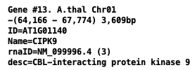
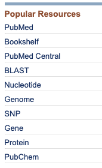
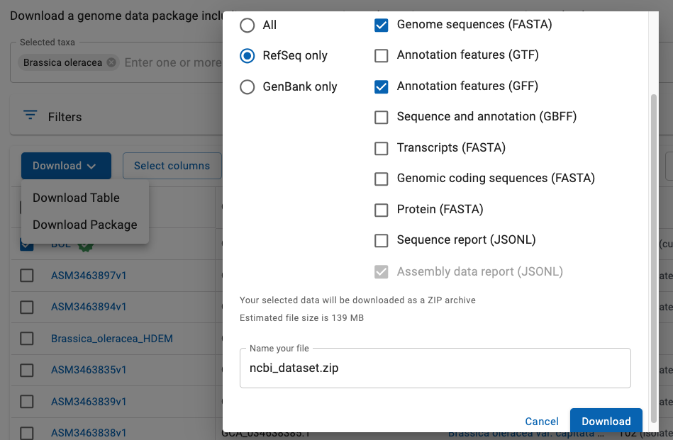
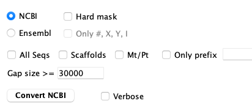

xToSymap and ConvertNCBI were updated in v5.8.6.
NCBI supplies FASTA formatted files for genome sequence and GFF3 formatted files for the annotation, where FASTA and GFF3 files are the input to SyMAP. Though they can be loaded directly into SyMAP, it is better to convert them.
|
|
Reasons to convert files
- The NCBI name for a chromosome or scaffold are long and crowd the interface. Convert uses "ChrN" instead for chromosomes only; when scaffolds are included it uses the prefixes 'C' for chromosome and 's' for scaffold.
- Only the 'protein-coding' genes are processed.
- Only the set of exons and CDS from the longest mRNA are saved (symap only loads one mRNA).
- Gene attributes of output GFF file:
ID from the input gene attributes. Name from the input gene attributes (if it is not equal ID). desc is the gene description; if it does not exist, then it uses the 1st mRNA product. Symbols (e.g. %3B) are replaced with the correct character. rnaID is equal to the longest mRNA ID. Following the ID is (n), where n=the number of mRNAs for the gene. 
- It has an option to produce a hard masked sequence.

Download
The following instruction were updated on 21-Jan-2026.- Go to NCBI.
As shown in Fig 1: Select the Genome link under Popular Resources on right-hand side. - As shown in Fig 2: Enter you genome name followed by Search.
- As shown in Fig 3:
- From the list of files, select the Assembly you want.
- Select Download Package from the Download drop-down. As shown, a window will popup with options.
- Select the RefSeq only with the Genome sequences (FASTA) and Annotation features (GFF) files.
Note: xToSymap does NOT work with Genbank files, only RefSeq. - Select Download. By default, a file called ncbi_dataset.zip will be downloaded.
|
 Fig 1. Popular Resources |
Fig 2. Search the NCBI site. |



Fig 3. Select the RefSeq only with the FASTA and GFF files.

Convert files
| xToSymap | Scaffolds | Go to top |
The following instructions will use the Brassica oleracea (wild cabbage) as an example.
- Go to the symap_5/data/seq directory.
- Make a subdirectory for your species, e.g. mkdir cabbN
- If you have NCBI .fna and .gff files,
move your .fna and .gff files to this directory.
- If you have the ncbi_dataset.zip file as discussed above in Download,
move ncbi_dataset.zip to this directory, and unzip it, e.g.
symap_5/data/seq/cabb> mv ~/Download/ncbi_dataset.zip . symap_5/data/seq/cabb> unzip ncbi_dataset.zip Archive: ncbi_dataset.zip inflating: README.md inflating: ncbi_dataset/data/data_summary.tsv inflating: ncbi_dataset/data/assembly_data_report.jsonl inflating: ncbi_dataset/data/GCF_000695525.1/GCF_000695525.1_BOL_genomic.fna inflating: ncbi_dataset/data/GCF_000695525.1/genomic.gff inflating: ncbi_dataset/data/dataset_catalog.json
- Select the appropriate xToSymap NCBI options (described below).
- Then select Convert.
annotation/anno.gff annotation/gap.gff sequence/genomic.fnaYou may remove everything but annotation/ and sequence/. However, you may want to keep the original .fna and .gff files in case you later want to make changes.
xToSymap
|
 | For the NCBI option, the FASTA file must end in ".fna" and the annotation file
must end in ".gff" (the NCBI defaults). These may be zipped files ending in ".gz".
For an explanation of the options, see Convert. |

Rules: There are variations in the text associated with the FASTA ">" header lines. The rules used by this script are as follows:
- Chromosomes: The name starts with 'NC_' or the header line contains the word "chromosome".
- The exception is that Mt/Pt chromosomes will not be output unless Mt/Pt is selected.
Mt/Pt: header line contains the word 'mitochondrion', 'mitochondrial', 'plastid' or 'chloroplast'. - Chromosomes are always output unless Only prefix is set, and the prefix does not match.
- >seqid:
If the ">" line contains "chromosome N", where N={number, X, Y or roman numeral}, than this number is used prefixed by 'Chr' or 'C' (if scaffolds are included). For example,
>NC_029256.1 Oryza sativa Japonica Group cultivar Nipponbare chromosome 1
is replaced with:
>Chr1 NC_029256.1Otherwise, the word following 'chromosome' is used. For example,
>NC_027748.1 Brassica oleracea var. oleracea cultivar TO1000 chromosome C1, BOL,....
is replaced with:
>C1 NC_027748.1.
- The exception is that Mt/Pt chromosomes will not be output unless Mt/Pt is selected.
- Scaffolds: The name starts with 'NW_' or 'NT_'.
- They will only be output if Scaffolds is selected.
- >seqid: 'Scaf' followed by a consecutive number.
- Unknown: All other ">" entries are considered "unknown".
- They will only be output if Only prefix matches.
- >seqid: 'Seq' followed by a consecutive number.
Scaffolds
By default, the Convert option creates the genomic.fna file with only the chromosomes. However, you can have it also include scaffolds by selecting Scaffolds.This will include all chromosomes (assigned prefix 'C') and scaffolds (assigned prefix 's') in the genomic.fna file. Beware, there can be many tiny scaffolds. If they all aligned in SyMAP, it causes the display to be very cluttered. Hence, it is best to just align the largest ones (e.g. the longest 30); merge them if possible, then try the smaller ones. You should set the following SyMAP project's Parameters:
- Group prefix needs to be blank as there will be no common prefix.
- Minimum length should be set to only load the largest scaffolds.
Calculate the length using the xToSymap Lengths.
General
| Load files into SyMAP | Editing the script | What the ConvertNCBI script does | Go to top |
Load files into SyMAP
The above scenario puts the files in the default SyMAP directories.- When you start up ./symap, you will see your projects listed on the left of the panel (e.g demos).
- Check the projects you want to load, which will cause them to be shown on the right of the symap panel.
- For the project you want to load, open the Project Parameters panel to enter the appropriate values.
- Then select Load Project.

Editing the script
The NCBI FASTA files are not consistent in their header lines. Hence, the parsing could be incorrect. They may also not be consistent in the GFF files, but I have not found one. Anyway, if it is not parsing the FASTA file correctly, edit the program as described here.What the ConvertNCBI script does
The script scripts/ConvertNCBI.java executes the same code as the xToSymap NCBI Convert.
FASTA: Reads the file ending in '.fna.gz' (or '.fna') and writes a new file called sequence/genomic.fna with the following changes:
- Sequences are output according to the options selected and Rules.
- Gaps of >30,000 are written to the annotation/gap.gff file (this value can be changed in the xToSymap interface).
- If Hard mask is selected, all lower case bases are changed to 'N'.
GFF: Reads the file ending in 'gff.gz' (or .gff) and writes the file annotation/anno.gff. The gff3 format has 9 columns, where the first is the 'seqid', the third is the 'type' (e.g. feature 'gene'), the last column is a semicolon-delimited keyword=value attribute list. The input file is processed as follows:
- The type=gene with attribute gene-biotype=protein-coding are processed.
The gene line is written to the anno.gff file with the following changes:
- The first column 'seqid' is replace with the value assigned when reading the '.fna' file.
- A subset of the attributes are written:
- ID and Name from the input gene attributes.
- desc is the gene description; if this does not exist, then it is the longest mRNA product.
- rnaID is equal to the first mRNA ID.
- The longest type=mRNA line for a gene is written to the anno.gff file followed by its type=exon and type=CDS, where they each are written with the new seqid and a subset of the attributes. The mRNA ID is saved as an gene attribute (rnaID=) to indicate which exons were saved.
| Go to top |
Email Comments To: cas1@arizona.edu